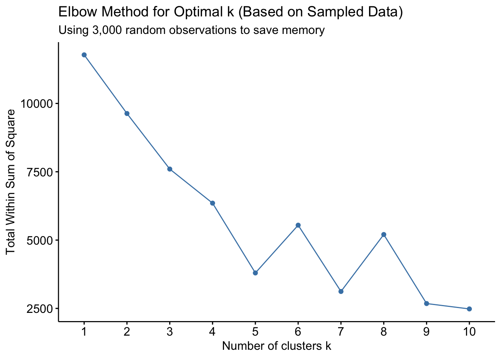
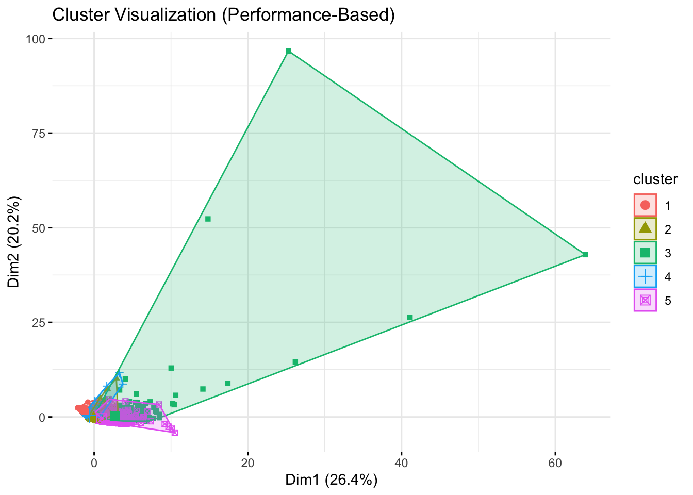
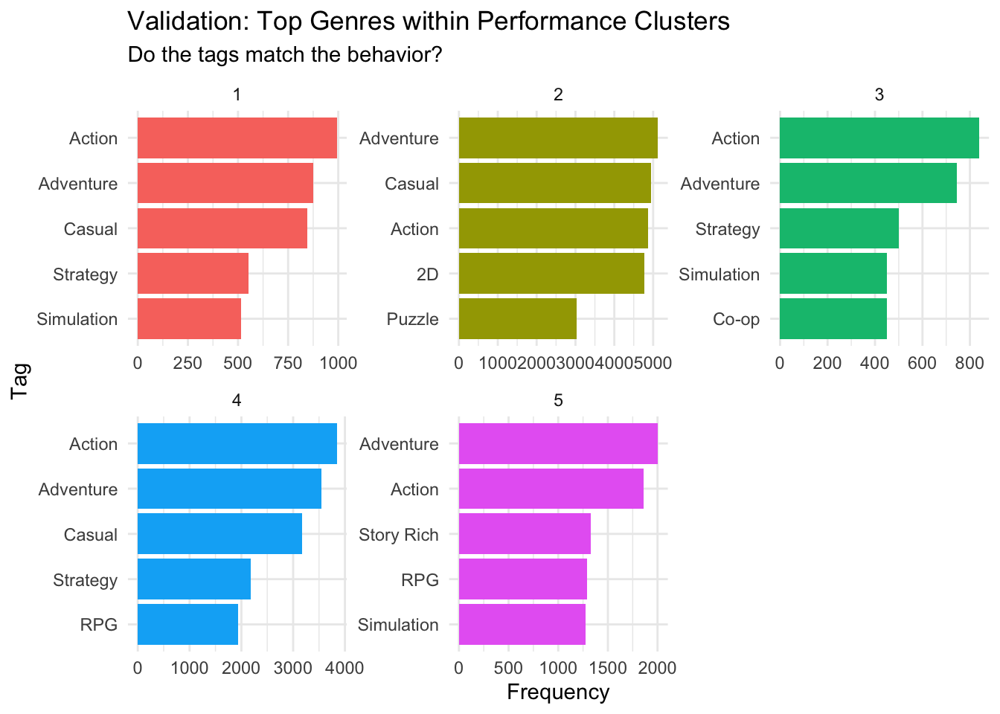
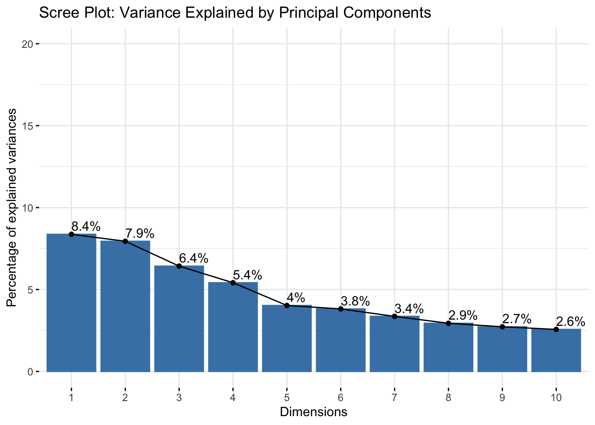
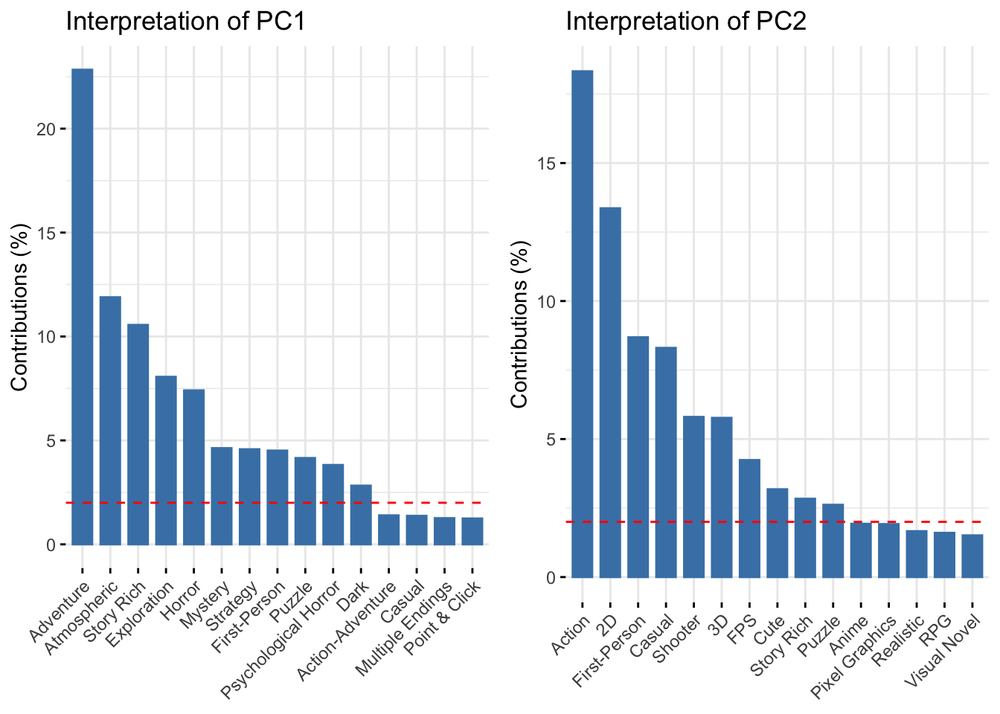
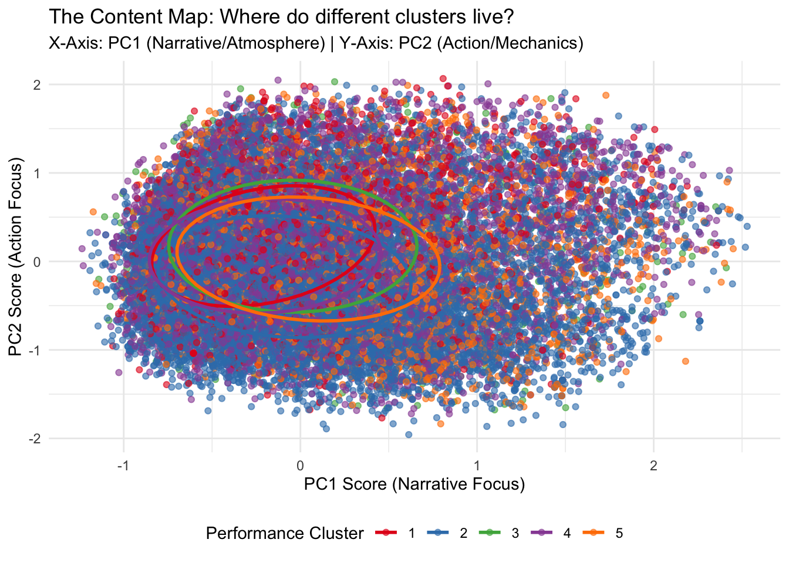
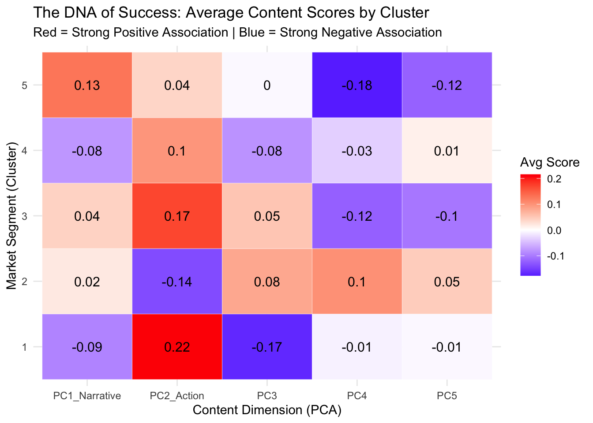

While the dataset already contains tags (e.g., “RPG,” “Indie”), we propose performing unsupervised clustering for three critical reasons:
Behavioral vs. Descriptive Analysis: Tags only describe what a game is (genre), but they fail to capture how it performs in the market. Clustering based on numerical features (Price, Playtime, CCU, Reviews) allows us to categorize games based on market performance and player engagement (e.g., identifying “High-Cost/High-Engagement” hits vs. “Low-Cost/Quick-Consumption” titles).
Noise Reduction & Dimensionality: Steam tags are user-generated, often redundant, and noisy. Unsupervised clustering helps cut through this noise to find robust, objective groupings based on hard data rather than subjective labeling.
Discovering “Success Formulas”: By cross-referencing our performance-based clusters with the existing content tags, we can identify specific archetypes of success. For example, we can explore if specific genres are over-represented in high-performance clusters, revealing the “winning formula” in the Steam market.
# ==============================================================================# DATA DICTIONARY & OVERVIEW# ==============================================================================# Loading the datasetlibrary(here)
here() starts at /Users/Springchoir/Master/Statistical Programming Paradigms and Workflows/Steam_analysis
steam_raw <-readRDS(here("data", "merged_data.rds"))# Variable Definitions:# ------------------------------------------------------------------------------# 1. Identity & Metadata# - appid: Unique Steam Identifier (Key)# - name: Game Title# - developer: Company that created the game# - publisher: Company that published the game# - release_date: Date of release (Format: "Oct 24, 2018")# - tags: Comma-separated string of user-defined genres (e.g., "FPS, Indie")# 2. Player Feedback (Sentiment)# - positive: Count of positive user reviews# - negative: Count of negative user reviews# - overall_review: Steam's categorical rating summary (e.g., "Very Positive")# 3. Popularity & Engagement# - owners: Estimated ownership range (String "1,000..2,000")# - ccu: Concurrent Users (Peak/Current online players)# - average_forever: Average playtime since launch (String)# - median_forever: Median playtime since launch (String)# - average_2weeks: Average playtime in the last 2 weeks (Recent engagement)# 4. Economics# - price: Current price (in cents)# - initialprice: Original price before discount# - discount: Current discount percentage# Check the initial structurestr(steam_raw)
To understand the market structure of Steam games beyond surface-level definitions, we propose a three-stage analysis:
Stage 1: Performance-Based Clustering (The “Behavioral” View)
Logic: We will cluster games based solely on numerical performance metrics, such as Price, Playtime (average_forever), User Engagement (positive_rate, ccu), and Sales estimates (owners).
Rationale: Tags define genre, but they do not define market positioning. This step identifies distinct market segments, such as “High-Retention Premium Games” versus “Quick-Consumption Budget Games.”
Expected Result: A clear segmentation of games based on their commercial success and player engagement profiles.
Stage 2: Content-Based Feature Extraction (The “Thematic” View)
Logic: We will process the user-defined tags into a binary matrix and apply Principal Component Analysis (PCA) to reduce dimensionality. We will extract the top Principal Components (PCs) to serve as continuous variables representing the game’s content.
Rationale: Steam tags are high-dimensional, noisy, and often correlated (e.g., “FPS” and “Shooter” often appear together). PCA distills these hundreds of tags into a few uncorrelated “Thematic Scores” (e.g., a “Narrative Score” or a “Combat Intensity Score”). This solves the multicollinearity problem and allows us to use game content as a quantitative input for further analysis.
Expected Result: A set of interpretable content factors (PC1, PC2, etc.) for each game, which will be merged with the performance data to identify which specific content archetypes drive market success.
Stage 3: Synthesis - Decoding the “Success Formula”
Logic: We bridge the gap between behavior and content by mapping the Performance Clusters (Stage 1) against the Content Features (Stage 2) using heatmaps and scatter plots.
Rationale: This intersection allows us to analyze the relationship between what a game is (Content) and how well it sells (Performance). We can identify which content archetypes are over-represented in high-performance clusters.
Expected Result: Identification of specific “winning formulas” (e.g., “High-Story + High-Price = Success”) and “Red Ocean” risks.
Part 2: Data Processing Code
This code performs the necessary cleaning, calculates positive_rate, and builds the crucial Tag Matrix.
# 1. Clean Numerical Variables & Feature Engineering# ------------------------------------------------------------------------------steam_clean <- steam_raw %>%mutate(# Convert 'average_forever' from Character to Numericaverage_forever =as.numeric(average_forever),# Calculate 'positive_rate'# Formula: Positive reviews / Total reviewstotal_reviews = positive + negative,positive_rate =ifelse(total_reviews >0, positive / total_reviews, 0),# Clean 'owners' (Sales estimate)# Logic: Extract the lower bound of the range "1,000,000 .. 2,000,000"# We remove commas and take the first number.owners_min =as.numeric(gsub(",|\\.\\..*", "", owners)),# Handle Price (convert to main currency unit)price =as.numeric(price) /100 ) %>%filter(!is.na(average_forever), !is.na(price))# 2. Construct Tag Dummy Matrix (For Content Clustering)# ------------------------------------------------------------------------------# We cannot use all tags (too sparse), so we select the Top 50 most frequent tags.# Identify Top 50 Tagstop_tags <- steam_clean %>%select(appid, tags) %>%separate_rows(tags, sep =",\\s*") %>%# Split "Indie, RPG" into separate rowsfilter(!tags %in%c("+", "Indie", "Singleplayer", "Multiplayer")) %>%count(tags, sort =TRUE) %>%top_n(50, wt = n) %>%pull(tags)# Create Binary Matrixtag_matrix <- steam_clean %>%select(appid, tags) %>%separate_rows(tags, sep =",\\s*") %>%filter(tags %in% top_tags) %>%# Keep only top 50 tagsmutate(has_tag =1) %>%distinct(appid, tags, .keep_all =TRUE) %>%pivot_wider(names_from = tags, values_from = has_tag, values_fill =0# Fill missing values with 0 (game doesn't have tag) )# Check the dimensions of the new datasetscat("Cleaned Data Dimensions:", dim(steam_clean), "\n")
# Preview the calculated positive ratehead(steam_clean %>%select(name, positive, negative, positive_rate))
# A tibble: 6 × 4
name positive negative positive_rate
<chr> <dbl> <dbl> <dbl>
1 Modern Combat 5 3130 2595 0.547
2 Prismata 970 217 0.817
3 Escape Room - Der kranke Kollege 9872 2233 0.816
4 Darkwood 20529 1089 0.950
5 Dino D-Day 12659 2391 0.841
6 Amnesia: A Machine for Pigs 7886 3457 0.695
Part 3: Clustering Analysis & Strategic Archetypes
Stage 1: Performance-Based Clustering (The “Behavioral” View)
In this initial phase, we categorize games based solely on their objective market performance and player engagement metrics, ignoring their genre or content labels. By applying K-Means clustering to numerical variables, we aim to uncover the underlying economic structure of the Steam marketplace.
# 1. Select and Standardize Data# ------------------------------------------------------------------------------# We select only numerical performance metrics.# We also conduct standardization in this partfeatures_df <- steam_clean %>%select(price, average_forever, positive_rate, ccu, owners_min)# Z-score normalizationdf_scaled <-scale(features_df)# 2. Determine Optimal Number of Clusters (Elbow Method)# ------------------------------------------------------------------------------# The full dataset (28k rows) causes memory overflow in fviz_nbclust.# We use a random sample (3000 points) to determine 'k'.set.seed(123)# Sample 3000 points just for the plotsample_indices <-sample(1:nrow(df_scaled), size =3000)df_sample <- df_scaled[sample_indices, ]# Run Elbow method on the samplefviz_nbclust(df_sample, kmeans, method ="wss") +labs(title ="Elbow Method for Optimal k (Based on Sampled Data)",subtitle ="Using 3,000 random observations to save memory" )

# 3. Run K-Means Clustering# ------------------------------------------------------------------------------# Based on the feature set size, we choose k = 5k_clusters <-5kmeans_result <-kmeans(df_scaled, centers = k_clusters, nstart =25)# Add cluster labels back to the original clean datasetsteam_clean$cluster_perf <-as.factor(kmeans_result$cluster)# 4. Visualize the Clusters (PCA Projection)# ------------------------------------------------------------------------------# Since we have 5 dimensions, we project them to 2D using PCA for visualization.fviz_cluster(kmeans_result, data = df_scaled,geom ="point",ellipse.type ="convex", ggtheme =theme_minimal(),main ="Cluster Visualization (Performance-Based)")

Visually, the cluster distribution forms a distinct geometry dominated by the extreme variance of the hit games in Cluster 3. This skewness confirms that market success on Steam follows a power law, where a handful of outliers stretch the performance metrics far beyond the norm. The remaining clusters are tightly packed near the origin, indicating that for the vast majority of games, raw sales and concurrent user numbers are relatively compressed. Consequently, quality metrics like positive rating become the primary differentiator between the successful indie games and the failures within this crowded core.
# 5. Cluster Profiling: What do these clusters actually mean?# ------------------------------------------------------------------------------# We calculate the average of each feature for every cluster to interpret them.cluster_summary <- steam_clean %>%group_by(cluster_perf) %>%summarise(avg_price =mean(price),avg_playtime =mean(average_forever),avg_rating =mean(positive_rate),avg_ccu =mean(ccu),avg_owners =mean(owners_min),count =n() ) %>%arrange(desc(avg_playtime))# Print the summary tableprint(cluster_summary)
The K-Means clustering analysis reveals a highly stratified market structure, segmenting the 28,017 games into five distinct profiles. At the top of the hierarchy, Cluster 3 represents the evergreen hits. Although this is the smallest group by count, it dominates the market with the highest average playtime and concurrent user counts, representing the long tail of massive commercial successes that retain players for years. Just below this tier lies Cluster 5, which comprises premium titles. These games command the highest average price point and maintain strong user ratings, characteristics typical of high-budget AA or AAA productions that justify their cost through extensive content. The largest and perhaps most revealing segment is Cluster 2, which can be best described as high-quality indie gems. Despite having a low average price similar to budget titles, this group achieves the highest customer satisfaction rating of the entire dataset. In stark contrast, the lower end of the market splits into Cluster 4 and Cluster 1. While both consist of low-priced titles, Cluster 1 suffers from catastrophically low user ratings, effectively categorizing them as shovelware, whereas Cluster 4 represents the vast middle ground of mediocre releases.
# ==============================================================================# VALIDATION WITH TAGS (The "Reality Check")# ==============================================================================# We check if performance clusters align with specific genres.# e.g., Does the "High Price/High Playtime" cluster contain "Strategy" tags?# 1. Extract Top 5 Tags per Clustercluster_tags <- steam_clean %>%select(cluster_perf, tags) %>%separate_rows(tags, sep =",\\s*") %>%filter(!tags %in%c("+", "Indie", "Singleplayer", "Multiplayer")) %>%group_by(cluster_perf, tags) %>%count() %>%group_by(cluster_perf) %>%slice_max(n, n =5)
# 2. Visualize Tag Distribution per Clusterggplot(cluster_tags, aes(x =reorder_within(tags, n, cluster_perf), y = n, fill = cluster_perf)) +geom_col(show.legend =FALSE) +facet_wrap(~cluster_perf, scales ="free") +coord_flip() +scale_x_reordered() +labs(title ="Validation: Top Genres within Performance Clusters",subtitle ="Do the tags match the behavior?",x ="Tag",y ="Frequency" ) +theme_minimal()

Cross-referencing these performance segments with content tags further validates the behavioral clustering. The high engagement of the evergreen hits is supported by the prevalence of Co-op and Strategy tags, genres known for inherent replayability and social interaction. The premium cluster uniquely features Story Rich and RPG tags, aligning with the higher development costs associated with narrative-driven content. Conversely, the high-satisfaction indie cluster is defined by Puzzle and 2D tags, fitting the profile of smaller, creative projects that can deliver highly polished gameplay mechanics without requiring the massive budgets of 3D action titles.
Stage 2
In this section, we perform Principal Component Analysis (PCA) on the top 50 game tags. This process reduces the dimensionality of the text data, allowing us to extract interpretable ‘Content Scores’ for each game to be used in the final analysis.
# ==============================================================================# STAGE 2: CONTENT-BASED FEATURE EXTRACTION (PCA)# ==============================================================================library(factoextra)# 1. Prepare Data for PCA# ------------------------------------------------------------------------------# We use the 'tag_matrix' created in the Data Processing step.# remove 'appid' as PCA takes only numeric matrix.pca_input <- tag_matrix %>%select(-appid)# 2. Run PCA# ------------------------------------------------------------------------------# scale = FALSE is usually preferred for 0/1 binary data to preserve # the density information, but centering is required.res.pca <-prcomp(pca_input, scale =FALSE, center =TRUE)# 3. Visualization: How many PCs should we keep?# ------------------------------------------------------------------------------# This plot shows how much variance is explained by each component.fviz_eig(res.pca, addlabels =TRUE, ylim =c(0, 20), main ="Scree Plot: Variance Explained by Principal Components")

The Scree Plot reveals that the thematic content of Steam games is highly multidimensional. There is no single dominant factor; instead, the variance is distributed across multiple components. The top 5 Principal Components (PCs) collectively explain approximately 32.1% of the total variance. This “long tail” structure confirms the complexity of the dataset and justifies our decision to extract multiple components (PC1–PC5) to capture the diverse content landscape effectively.
# 4. Visualization: Interpreting the Components (The "Semantics")# ------------------------------------------------------------------------------# We need to know what "PC1" actually means.# We look at the "Contribution" of variables (tags) to the components.# Plot 1: What defines PC1?p1 <-fviz_contrib(res.pca, choice ="var", axes =1, top =15, title ="Interpretation of PC1")# Plot 2: What defines PC2?p2 <-fviz_contrib(res.pca, choice ="var", axes =2, top =15, title ="Interpretation of PC2")# Display the interpretation plots side by sidelibrary(gridExtra)grid.arrange(p1, p2, ncol =2)

The Contribution Plots demonstrate that PCA successfully extracted coherent “Thematic Archetypes” from the noisy raw tags:
PC1: The “Narrative & Atmosphere” Factor. This component is heavily driven by tags such as Adventure, Atmospheric, Story Rich, and Exploration. High scores on PC1 likely indicate single-player, immersive, or narrative-driven experiences.
PC2: The “Action & Mechanics” Factor. In contrast, PC2 is defined by Action, 2D, FPS, and Shooter. This component captures the gameplay intensity and mechanical focus of a game.
# 5. Extract & Merge Features for Stage 3# ------------------------------------------------------------------------------# We extract the "Coordinates" of the first 5 PCs.# These will become new columns in our main dataset: PC1, PC2, ... PC5.pc_scores <-as.data.frame(res.pca$x[, 1:5]) %>%rename(Content_PC1 = PC1,Content_PC2 = PC2,Content_PC3 = PC3,Content_PC4 = PC4,Content_PC5 = PC5 )# Bind these scores back to the App ID to ensure correct mergingpc_features <-bind_cols(select(tag_matrix, appid), pc_scores)# Combine Stage 1 (Clusters) and Stage 2 (PCA)steam_final <- steam_clean %>%inner_join(pc_features, by ="appid")# Preview the final dataset structureglimpse(steam_final %>%select(name, cluster_perf, Content_PC1, Content_PC2))
Stage 3: Synthesis — Decoding the “Success Formula”
In this final phase, we synthesize our findings to decode the market’s “success formula.” Rather than generating a new set of clusters, we treat the Performance Clusters established in Stage 1 as our target market segments and utilize the Content Features (PC Scores) derived in Stage 2 as explanatory variables. By mapping these performance groups onto the multidimensional content space, we examine the distribution of thematic scores across different segments. This approach allows us to answer a critical business question: Do successful titles systematically inhabit specific content archetypes—such as narrative-heavy or action-oriented experiences—compared to the “shovelware” found in lower-performing clusters?
# ==============================================================================# STAGE 3: SYNTHESIS - LINKING PERFORMANCE TO CONTENT# ==============================================================================library(tidyverse)library(viridis)# 1. Visualization A: The "Content Map" (Scatter Plot)# ------------------------------------------------------------------------------# We plot games on the PC1 vs. PC2 axes.ggplot(steam_final, aes(x = Content_PC1, y = Content_PC2, color = cluster_perf)) +geom_point(alpha =0.6, size =1.5) +# Add ellipsesstat_ellipse(level =0.5, size =1) +scale_color_brewer(palette ="Set1") +labs(title ="The Content Map: Where do different clusters live?",subtitle ="X-Axis: PC1 (Narrative/Atmosphere) | Y-Axis: PC2 (Action/Mechanics)",x ="PC1 Score (Narrative Focus)",y ="PC2 Score (Action Focus)",color ="Performance Cluster" ) +theme_minimal() +theme(legend.position ="bottom")

The scatter plot illustrates the semantic spread of the market segments. While there is significant overlap (indicating that games of all genres exist in all price points), a key pattern emerges: Cluster 5 (Premium Titles, Orange ellipse) shows a distinct rightward shift along the X-axis (PC1). This suggests that high-price premium games are structurally more likely to focus on Narrative and Atmosphere than the broader market.
# 2. Visualization B: The "Formula Heatmap" (CRITICAL INSIGHT)# ------------------------------------------------------------------------------# This creates a matrix showing the AVERAGE score of each PC for each Cluster.# Step 1: Calculate averagescluster_profile_pca <- steam_final %>%group_by(cluster_perf) %>%summarise(PC1_Narrative =mean(Content_PC1),PC2_Action =mean(Content_PC2),PC3 =mean(Content_PC3),PC4 =mean(Content_PC4),PC5 =mean(Content_PC5) ) %>%pivot_longer(cols =starts_with("PC"), names_to ="PC_Dimension", values_to ="Avg_Score")# Step 2: Plot Heatmapggplot(cluster_profile_pca, aes(x = PC_Dimension, y = cluster_perf, fill = Avg_Score)) +geom_tile(color ="white") +scale_fill_gradient2(low ="blue", mid ="white", high ="red", midpoint =0) +geom_text(aes(label =round(Avg_Score, 2)), color ="black", size =4) +labs(title ="The DNA of Success: Average Content Scores by Cluster",subtitle ="Red = Strong Positive Association | Blue = Strong Negative Association",x ="Content Dimension (PCA)",y ="Market Segment (Cluster)",fill ="Avg Score" ) +theme_minimal()

The heatmap reveals the distinct “Content DNA” required for different types of market success, highlighting how specific content archetypes drive performance:
The “Premium” Formula (Cluster 5): This segment is driven by the strongest positive association with PC1 (Narrative) at +0.13, suggesting that to justify a high price point ($20+), a game must deliver high production value in storytelling, atmosphere, and immersion rather than relying solely on mechanics.
The “Evergreen Hit” Formula (Cluster 3): The games with the highest player counts show a dominant preference for PC2 (Action) at +0.17, indicating that long-term replayability and mass popularity are heavily fueled by intense gameplay loops, such as multiplayer shooters or roguelikes.
The “Indie Gem” Strategy (Cluster 2): Fascinatingly, highly-rated indie games show a strong negative association with PC2 (Action) at -0.14, implying that these titles succeed by engaging in “asymmetric competition”—avoiding the saturated action market to focus on alternative genres like puzzles or strategy.
The “Shovelware” Trap (Cluster 1): Poorly rated games exhibit a “soulless clone” pattern with high PC2 (Action) scores (+0.22) but negative PC1 (Narrative) scores (-0.09), suggesting they attempt to mimic the mechanics of popular action hits but fail to deliver the necessary polish or depth.